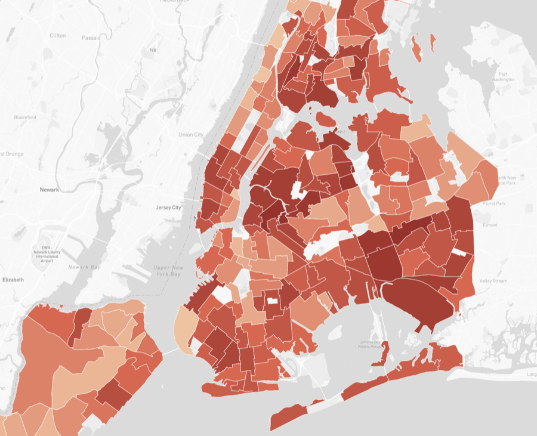
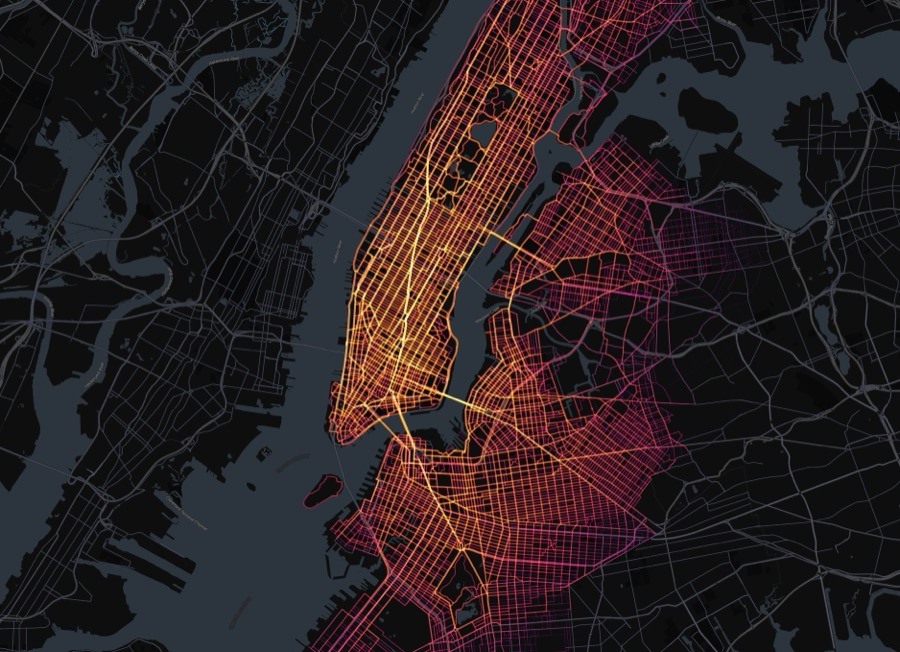
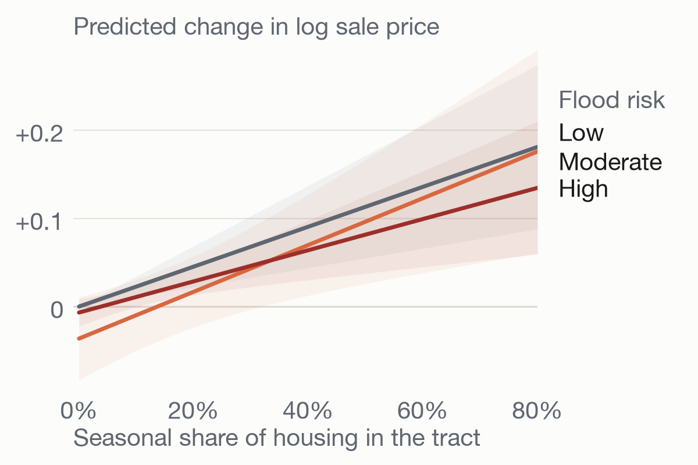

Projects
Research and data projects on urban heat, climate risk, mobility and urban technology. Most come with a paper and open code.
Selected



More
-
CitiBike Demand Forecasting Citywide daily CitiBike demand prediction for New York City with XGBoost.
-
Urban AI Topic Modeling Topic modeling of how different cities frame AI in their official documents.